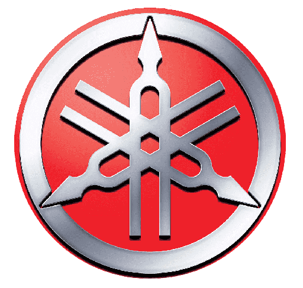

RD 350: A VIÚVA NEGRA QUE MARCOU HISTÓRIA
Conheça um pouco mais desta incrível motocicleta, que marcou gerações e recebeu o apelido de Viúva Negra
A Yamaha lançou no ano de 1973 uma moto que marcaria de vez a história do motociclismo mundial, a RD 350. Sua produção aconteceu entre 1973 e 1993, duas décadas que marcaram a época e que a deu o cruel apelido de Viúva Negra.
Muitos ainda não sabem, mas a sigla RD, significa Road Developed, na tradução nada mais do que (feita para disputas). No Brasil, as primeiras RDs chegaram a partir de 1974, pouco tempo antes da proibição de importação de veículos em 1976. Desde então, apenas em outros países a motocicleta era vista e com o passar do tempo acompanhávamos a sua evolução de longe.
O primeiro modelo da RD 350 era equipado com um motor de 347 cm3 (diâmetro de 64 mm, curso de 54 mm), que desenvolvia 39 cv de potência a 7.500 rpm e torque máximo de 3,8 m.kgf a 7.000 rpm. Seu torque em baixa rotação era quase nulo, seu surto de potência ocorria a partir dos 5.000 rpm. Com apenas 143 kg de peso, atingia velocidade máxima de 166 km/h e acelerava de 0 a 100 km/h em cerca de 7s.
Esta configuração era vista nos poucos modelos que os motociclistas brasileiros adquiriram entre 1974 e 1976. Com o passar dos anos, varias modificações estéticas e mecânicas aconteceram na RD 350 e só a parir de 1986, quando a Yamaha iniciou a produção do modelo RD 350 LC em Manaus, o Brasil pode ver novamente esta máquina.
Sua configuração já estava bem mais avançada e sofisticada, era a moto mais esportiva já produzida no Brasil com um visual e mecânica praticamente igual aos modelos lançados lá fora. Devido a qualidade de nosso combustível a Viúva Negra Brasileira chegou com redução de potência, era 55 cv a 9.000 rpm, com torque máximo de 4,74 m.kgf a 8.500 rpm.
Era uma verdadeira máquina esportiva que poderia ser utilizada no ambiente urbano, e que por isso exigia bastante habilidade dos pilotos. Devido algumas vítimas fatais que este modelo causou, seu apelido ganhou cada vez mais força, a “Viúva Negra”.
A moto apresentava freios a disco dianteiro com pastilhas de dupla ação, cambio de 6 marchas, porém, equipada com um potente motor dois tempos que atingia com facilidade e rapidez altas velocidades, na hora de frear era necessário muita destreza, caso contrário era chão.
Com toda certeza podemos afirmar que foi uma das mais reverenciadas motocicletas, já produzidas no Brasil e sem sombra de dúvidas uma das mais amadas pelos fãs das motos esportivas.
Curiosidades:

Quantos cv tem a RD 350?
A partir de 1986, a RD350 começa a ser fabricada no Brasil com um novo visual e uma carenagem semi-integral. Os modelos daquela época emolduravam um motor bicilíndrico e dois tempos com de 347 cc capaz de produzir 55 cv a 9.000 rpm .
veja mais...
Qual a Velocidade máxima?
Segundo o fabricante, a velocidade máxima chegava aos 200 km/h e a prova de aceleração até os 100 km/h era cumprida em 5 segundos.
veja mais...
O que significa RD da Yamaha?
O significado da sigla RD (“Race Developed”, ou “desenvolvida nas corridas”) nunca escondeu a orientação da Yamaha de levar para as ruas motos com aprimoramentos projetados nas competições.
veja mais...